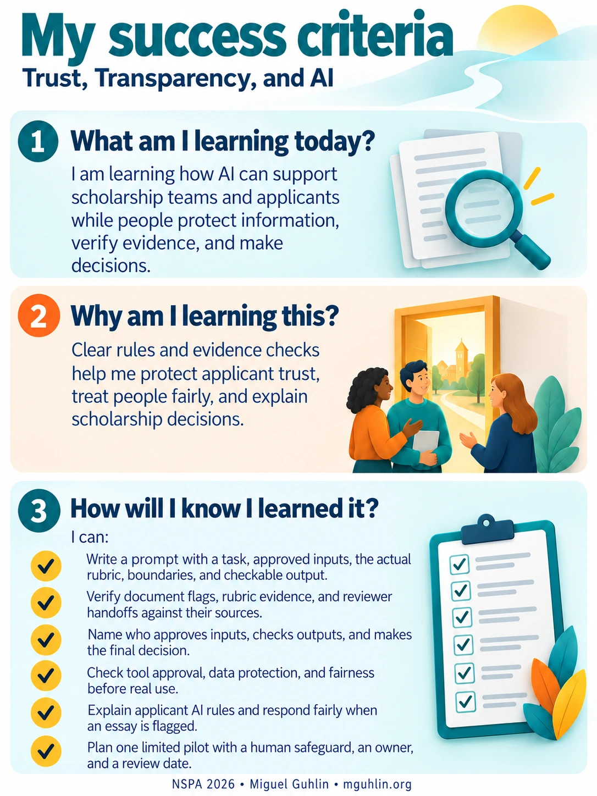

NSPA26 · October 21, 2026 · 3:30–5:00 PM CT · 90 minutes
Trust, Transparency, and AI
Building Responsible Scholarship Review Practices
Keep the participant materials
My success criteria

Read the success criteria as text
What am I learning today?
I am learning how AI can support scholarship teams and applicants while people protect information, verify evidence, and make decisions.
Why am I learning this?
Clear rules and evidence checks help me protect applicant trust, treat people fairly, and explain scholarship decisions.
How will I know I learned it?
I can:
- Write a prompt with a task, approved inputs, the actual rubric, boundaries, and checkable output.
- Verify document flags, rubric evidence, and reviewer handoffs against their sources.
- Name who approves inputs, checks outputs, and makes the final decision.
- Check tool approval, data protection, and fairness before real use.
- Explain applicant AI rules and respond fairly when an essay is flagged.
- Plan one limited pilot with a human safeguard, an owner, and a review date.